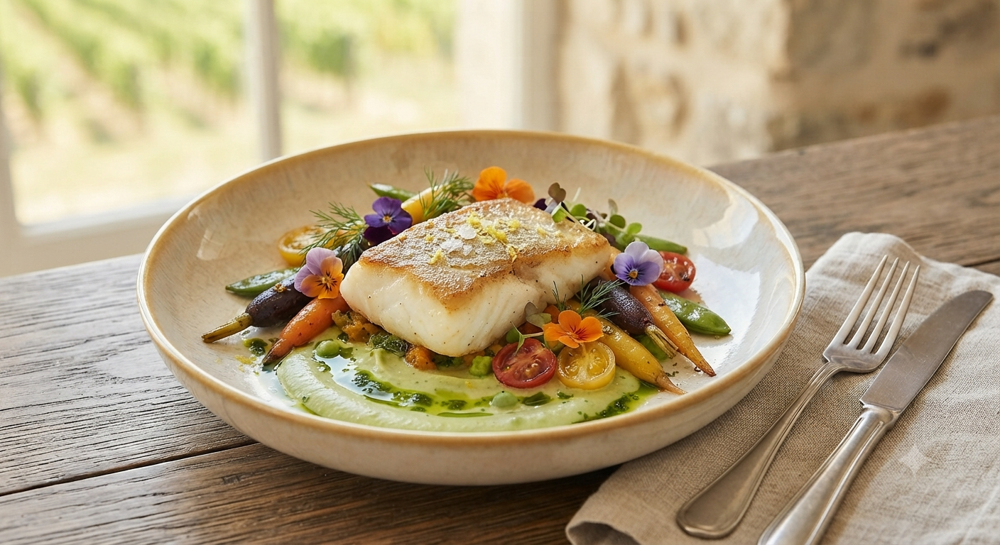
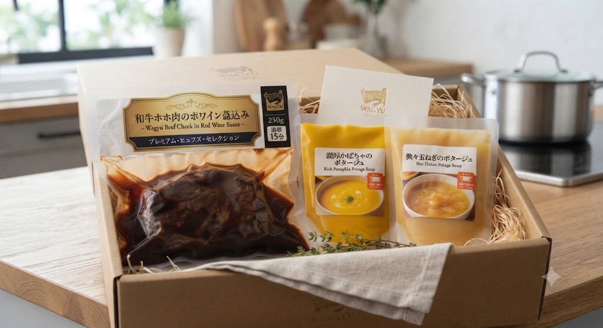

和牛ホホ肉の赤ワイン煮込みと、四季の彩り。

高級レストランのような過度な装飾はありません。私たちが大切にしているのは、素材そのものが持つ「声」を届けること。
宮城が育んだ登米ポーク や三陸の魚介を、添加物に頼らず、一皿一皿丁寧に。物腰柔らかな店主と奥様が営むこの場所は、肩肘を張らずに最高の一食を愉しめる「大人の隠れ家」です。
Simple, Gentle, and Authentic.
オードブルからデザートまで全て美味しいです。素朴で優しい味付け。添加物の味がしません。素材そのものを吟味して一皿、一皿丁寧に。本当に素晴らしい体験でした。
— 3度目のご来店のお客様
スープは沸だてたのか泡立つほど熱々。顧客の口に温かいスープを届けたかった結論的な手段でしょう。シェフの意図を感じ、満足感が非常に高いです。
— 家族でご利用のお客様
本Webサイトをご覧いただき、お電話にてご予約いただいたお客様限定の特典です。その日最も美味しい素材を使った特選デザートをご用意してお待ちしております。
022-215-3410※ご予約の際に必ず「LPを見た」とお伝えください。
新しいおもてなしのかたち
多くのお客様から「この優しい味を家族にも贈りたい」「自宅でもゆっくり楽しみたい」というお声をいただき、新プロジェクトが始動します。
名物の「和牛ホホ肉の赤ワイン煮込み」や、熱々の「ポタージュスープ」をできたてそのままの美味しさで真空パック冷凍。
湯煎するだけで、ご家庭の食卓がいつでも特別なレストランに変わる新サービスです。
